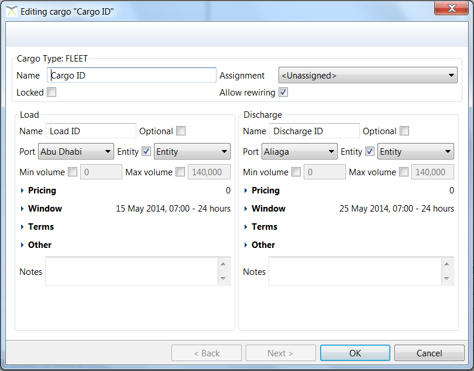
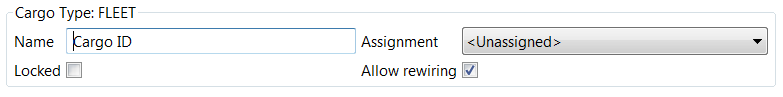

Table of Contents
Data Restrictions - unique name, no overlaps
Assigned vessel vs. allowed vessel
Step by step example(s)!

The Cargo Editor dialog allows various aspects of a cargo to be modified. The top part of the dialog  contains information about the entire cargo, with inputs as follows:
|
Name |
The cargo’s unique name. |
|
Assignment |
The vessel the cargo is assigned to. |
|
Locked (to a vessel) |
If this checkbox is unchecked, the optimiser is free to reallocate the cargo to a different vessel. If the checkbox is checked, the optimiser will ensure that the cargo is assigned to the specified vessel. |
|
Allow rewiring |
If this checkbox is checked, the optimiser is free to pair the specified load and discharge slots of this cargo with different loads and discharges, if it finds more commercially viable pairings. If the checkbox is unchecked, the optimiser will not consider reallocating the specified pairing. |